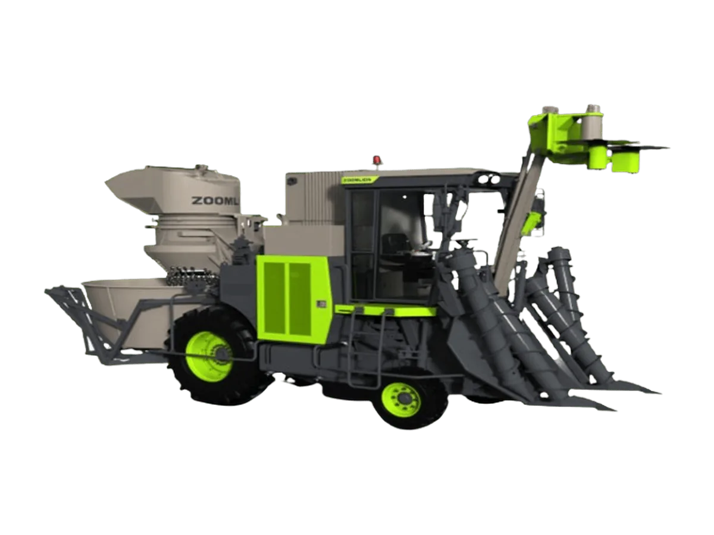

Mesin Panen Tebu
Zoomlion C610
Sugarcane harvester roda berukuran menengah generasi terbaru yang dirancang untuk lahan berukuran kecil dengan jarak antarbaris ≥1,1 m, dilengkapi mesin 210 HP dan hopper 2,1 m³
Bandingkan dengan unit lain →Keunggulan
- Kapasitas panen tinggi hingga ≥15 ton/jam
- Mobilitas lahan cepat dengan kecepatan jalan maksimum 18 km/jam
- Kestabilan lebih baik: titik berat rendah dengan distribusi beban kiri-kanan yang seimbang, menghadirkan stabilitas lateral unggul dan menekan risiko terguling
- Pengoperasian mudah: sistem kendali elektronik penuh dengan operasi yang disederhanakan dan hemat tenaga
- Perawatan mudah: seluruh titik servis mudah dijangkau, dan ruang mesin dilengkapi lampu perawatan
Spesifikasi
| Jenis Mesin Panen | Wheeled Sugarcane Harvester |
|---|---|
| Dimensi | 7.178 × 2.320 × 3.960 mm |
| Lebar Gauge | 2.425 mm |
| Radius Putar Minimum | 6 m |
| Berat Operasi | 9,00 ton |
| Kecepatan Maksimum | 18 km/jam |
| Kemampuan Tanjakan | 20% |
| Kapasitas Tangki BBM | 280 L |
| Kapasitas Oli Hidrolik | 180 L |
| Jarak Antarbaris Tebu | ≥1.200 mm |
| Produktivitas Kerja | ≥17,5 ton/jam |
| Model Mesin | Cummins National III, 5,9 L |
| Tipe Mesin | 6 Silinder |
| Tenaga Mesin | 154 kW (210 HP) @ 2.100 rpm |
| Tipe Crop Divider | Boat-Type Divider |
| Jarak Ujung Divider | 1.100 mm |
| Rentang Tinggi Topper | 890–3.000 mm |
| Kapasitas Hopper | 2,1 m³ |
| Beban Hopper Maksimum | 700 kg |
| Sistem Kontrol | Full Electro-Hydraulic dengan Multi-Function Joystick |
| Kabin | Cabin dengan Air Conditioner |
| Telematika | Standar |
| Sistem Pemantauan | Harvesting Video Monitoring + Rearview Camera |
Tanya harga & ketersediaan unit
Tim kami siap membantu memilih unit yang sesuai kebutuhan lahan Anda.